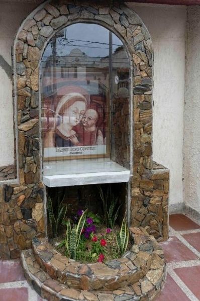
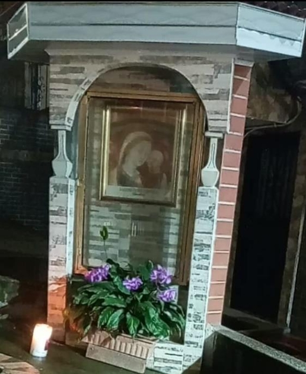

Primera gruta
País: Colombia.
Ubicación: Al suroeste del departamento de Antioquia, en el corregimiento Altamira de Betulia, Vereda San Mateo (Arquidiócesis de Santa Fe de Antioquia).
Parroquia a la que pertenece: Santa Teresa de Jesús, Altamira.
Fecha de bendición: 26 diciembre 2021 a las 11 a.m.
Presbítero que la bendijo: Padre Iván de Jesús Ochoa Londoño (Padre fundador).
Apoyo incondicional de:
Segunda gruta
País: Costa Rica.
Ubicación: Provincia de Puntarenas en la ciudad de Quepos. Sector Rancho Grande, en las instalaciones de la Parroquia (Diócesis de Puntarenas).
Parroquia a la que pertenece: Inmaculada Concepción de María.
Fecha de bendición: 23 de Octubre del 2022 a las 9:00 a.m.
Presbítero que la bendijo: Rolando Zanabria Romero.
Apoyo incondicional de:
Tercera gruta
País: Estados Unidos.
Ubicación: Estado de Texas, San Antonio. 668 granite cliff 78251 (Arquidiócesis de San Antonio).
Parroquia a la que pertenece: María Nuestra Madre de PHARIS.
Fecha de bendición: 14 de Marzo del 2023 a las 10:00 a.m.
Presbítero que la bendijo: Martín Leopoid.
Apoyo incondicional de:
Cuarta gruta
País: Colombia.
Ubicación: Departamento de Antioquia, Municipio El Retiro, Vereda de los Salados (Diócesis de Sonsón - Rionegro).
Parroquia a la que pertenece: Sagrado Corazón de Jesús.
Fecha de bendición: 12 de Mayo del 2023 a las 3 p.m.
Presbítero que la bendijo: Favio Alonso Gómez.
Apoyo incondicional de:
Quinta gruta
País: Colombia.
Ubicación: Departamento de Antioquia, Municipio San Pedro de los Milagros, cabecera municipal sector Los Nogales carrera 49 # 38- 117 al frente de la subestación de gas (Diócesis de Santa Rosa de Osos).
Parroquia a la que pertenece: El Señor de los Milagros.
Fecha de bendición: 13 de Mayo del 2023 7 p.m.
Presbítero que la bendijo: Esteban Sosa.
Apoyo incondicional de:
Sexta gruta
País: México.
Ubicación: Estado de Zacatecas, municipio de Tlaltenango, Colonia Los Villarreales (Diócesis de Zacatecas).
Parroquia a la que pertenece: Nuestra Señora de Guadalupe.
Fecha de bendición: 20 de Julio del 2023 4:00 p.m.
Presbítero que la bendijo: Raul Hurtado Luján.
Apoyo incondicional de:
Séptima gruta
País: Colombia.
Ubicación: Departamento de Córdoba, ciudad de Montería, Vereda California. Corregimiento de Mocarí (Diócesis de Montería).
Parroquia a la que pertenece: San José de Mocarí.
Fecha de bendición: 12 de febrero del 2024 a las 4:00 p.m.
Presbítero que la bendijo: Orlando López Rivera.
Apoyo incondicional de:
Octava gruta
País: Colombia.
Ubicación: Departamento de Antioquia, Distrito de Medellín, Corregimiento San Cristóbal Bella Vista parte alta, Hogar de Jesús (Arquidiócesis de Medellín).
Parroquia a la que pertenece: San Vicente Ferrer.
Fecha de bendición: 26 de Abril del 2024 a las 2:00 p.m.
Presbítero que la bendijo: Eduard Alexander Soto Patiño.
Apoyo incondicional de:
Novena gruta
País: Colombia.
Ubicación: Departamento de Magdalena, ciudad de Santa Marta, Calle 28 A # 6 B -59 Taminaca (Diócesis de Santa Marta).
Parroquia a la que pertenece: La Eucaristía.
Fecha de bendición: 26 de Abril del 2024 a las 3 p.m.
Presbítero que la bendijo: José Antonio Díaz Hernández.
Apoyo incondicional de:
Décima gruta
País: Colombia.
Ubicación: Departamento de Antioquia, Distrito de Medellín, barrio Manrique Oriental, Carrera 36 # 70- 74 (Arquidiócesis de Medellín).
Parroquia a la que pertenece: Santa Ana.
Fecha de bendición: 26 de Abril del 2024 a las 7 p.m.
Presbítero que la bendijo: Dilan Gonzalo Tamayo.
Apoyo incondicional de:
Décimo primera gruta
País: Colombia.
Ubicación: Departamento de Antioquia, Distrito de Medellín, Corregimiento San Cristóbal La Loma, junto al atrio de la Parroquia (Arquidiócesis de Medellín).
Parroquia a la que pertenece: San Vicente Ferrer.
Fecha de bendición: 28 de Abril del 2024 a las 2:00 p.m.
Presbítero que la bendijo: Eduard Alexander Soto Patiño.
Apoyo incondicional de:
Décima segunda gruta
País: Colombia.
Ubicación: Departamento de Antioquia, municipio de Venecia suroeste Antioqueño, barrio obrero parte baja Calle 47a - con carrera 52 (Diócesis de caldas).
Parroquia a la que pertenece: Santuario San José de Venecia.
Fecha de bendición: 14 de Mayo del 2024 a las 7:00 p.m.
Presbítero que la bendijo: Cesar Augusto Rodríguez Castaño.
Apoyo incondicional de:
Décimo tercera gruta
País: Colombia.
Ubicación: Departamento de Antioquia, municipio de Envigado - las Lomas.
Parroquia a la que pertenece: Nuestra señora de las Lomas.
Fecha de bendición: 21 de Mayo del 2024 a las 6 p.m. (celebración Eucaristía en su honor).
Presbítero que la bendijo: Rubén Darío Ospina Gil.
Apoyo incondicional de:
Décima cuarta gruta
País: Colombia.
Ubicación: Departamento de Antioquia, municipio de Barbosa, Corregimiento El atillo, vereda el Paraíso (Diócesis de Girardota).
Parroquia a la que pertenece: Sagrado Corazón de Jesús.
Fecha de bendición: Sagrado Corazón de Jesús.
Presbítero que la bendijo: Pedro Nel Torres Valencia.
Apoyo incondicional de:
Décima quinta gruta
País: Colombia.
Ubicación: Departamento de Sucre, municipio de San Onofre, corregimiento Rincón del Mar.
Parroquia a la que pertenece: Nuestra Señora del Mar.
Fecha de bendición: 8 de Diciembre del 2024 a las 10 a.m.
Presbítero que la bendijo: Wilson Morales Suarez.
Apoyo incondicional de:
Décimo sexta gruta
País: Colombia.
Ubicación: Departamento de Antioquia, municipio de Jardín, entrada a la vereda Morro Amarillo.
Parroquia a la que pertenece: Basílica Menor de la Inmaculada Concepción.
Fecha de bendición:
Presbítero que la bendijo:
Apoyo incondicional de: